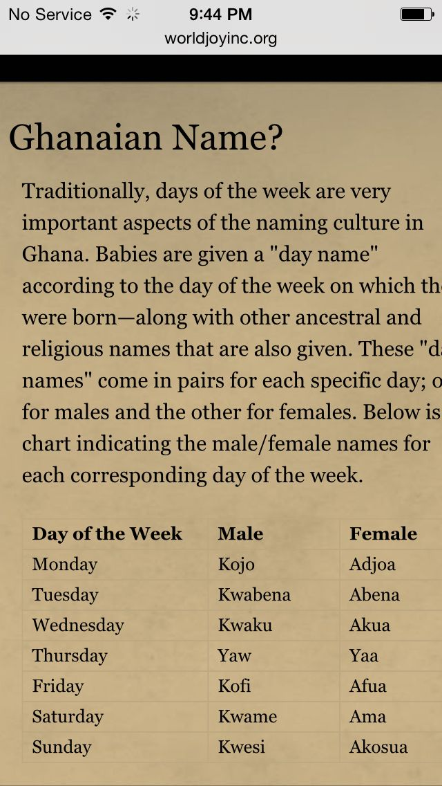

About the Ghanaian Naming Culture
In Ghana, names have a deep cultural significance. The Akan people are known for naming children after the day of the week they were born. This tradition reflects the belief that the day of birth influences one's character and destiny. For instance, boys born on Friday are named "Kofi," while girls are named "Afua." This tradition is an integral part of the Ghanaian identity, connecting individuals to their roots and community.
